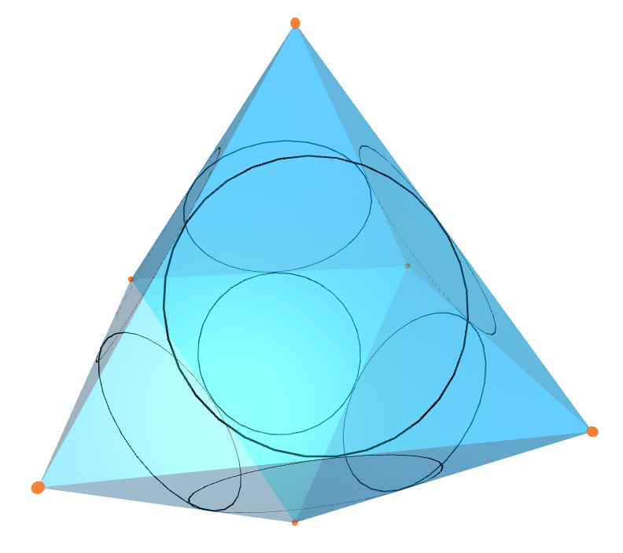

It is also possible that some vertices are visible and others are not. We illustrade this functionality by animating an octahedron with none but the vertices 2 and 3 visible.
This chapter deals with animating simplicial surfaces via Javascript using three.js, see https://threejs.org/. Currently we are using r148.
This section contains a minimal example by animating an octahedron and shows the general animation workflow. To construct an octahedron, we only need to specify the 3D-coordinates of the vertices.
gap> oct := Octahedron();; gap> verticesPositions := [ > [ 0, 0, Sqrt(2.) ], > [ 1, 1, 0 ], > [ 1, -1, 0 ], > [ -1, -1, 0 ], > [ -1, 1, 0 ], > [ 0, 0, -Sqrt(2.) ] ];; gap> printRecord := SetVertexCoordinates3D(oct, verticesPositions, rec());; gap> DrawComplexToJavascript(oct, "octahedron.html", printRecord);;
Now, your working directory should contain a file "octahedron.html". Here is an image of the animation:
The philosophy of the code presented in this chapter is as follows: The main method DrawComplexToJavascript (Section 3.3) animates the surfaces using the configuration saved in the so called printRecord, e.g. the 3D-coordinates (lists with three float entries) of the vertices. It is necessary that the printRecord contains the 3D-coordinates of each vertex of the surface which should be animated. Based on the 3D-coordinates of the vertices, the surface is placed in the animation. Therefore, a typical workflow to animate a surfaces looks like this:
Construct the surface, e.g. the octahedron above.
Configure your animation using the methods in the Sections 3.4 and 3.5.
Write your animation to a file calling the main method DrawComplexToJavascript (see Section 3.3).
The output of the method DrawComplexToJavascript(3.3-3) is an html file. The file can be opened with most browsers and then the surface is shown as a 3D render with some manipulation options. Because we load the three.js dependecies (and three.js itself) from a CDN (content delivery network) it requires an active internet connection.
The files output by DrawComplexToJavascript have some options that can be changed live in the html file. These are in the graphical user interface (GUI). Here is an example:
Here you can change the following:
The speed of rotation in the X, Y and Z direction
The transparency of the faces which are enabled
Show a wireframe. This goes around all faces even if they are not enabled
There are plans to implement more features to this GUI, keep an eye on new releases for that. This GUI is implemented using the dat.GUI package from three.js.
This section describes the animation method and how to define vertex coordinates. Before the animation (see DrawComplexToJavascript 3.3-3) can be drawn, it is necessary to specify the 3D-coordinates (which means, the [x,y,z] coordinates) of all vertices of the surface which should be animated (see SetVertexCoordinates3D 3.3-1).
After setting the vertex coordinates, the location of the edges in R^3 has to be derived. By default, the method DrawComplexToJavascript(3.3-3) always calculates the edge locations depending on the current vertices positions. If you want to avoid that, you can use the method DrawComplexToJavascriptCalculate(3.3-3) and set the last parameter to false. In this case, only the first call of the method computes the edge locations. Using this method can make the animation inconsistent if the coordinates of the vertices have changed but the edge locations have stayed the same.
The animation draws all faces and a wireframe for them individually. This wireframe can be enabled and disabled in the user interface. The vertices will be drawn as small spheres, with the corresponding number is displayed above the vertex. These will be only drawn if they are active, see ActivateVertices 3.4-1
Note, it is also possible to animate simplicial surfaces whose vertices, edges and faces are not given by a dense list [1..n]. For example the function SetVertexCoordinates3D allows a list of 3D-coordinates as input that is not dense. But this only works in the case that the 3D-coordinate of vertex i is stored in the i-th position of the given list.
gap> oneFace:=SimplicialSurfaceByDownwardIncidence([,[3,7],,[7,10],,[3,10]], > [,,[2,4,6]]);; gap> Vertices(oneFace); [ 3, 7, 10 ] gap> coor:=[];; gap> coor[3]:=[1,0,0];;coor[7]:=[0,1,0];;coor[10]:=[0,0,1];; gap> printRecord:=SetVertexCoordinates3D(oneFace,coor,rec());; gap> DrawComplexToJavascript(oneFace,"OneFace_animating",printRecord); rec( edgeThickness := 0.03, vertexCoordinates3D := [ ,, [ 1, 0, 0 ],,,, [ 0, 1, 0 ],,, [ 0, 0, 1 ] ] )
‣ SetVertexCoordinates3D( surface, coordinates[, printRecord] ) | ( operation ) |
‣ SetVertexCoordinates3DNC( surface, coordinates[, printRecord] ) | ( operation ) |
Returns: the updated print record
Save the given list of 3D-coordinates coordinates in the given or an empty print record. The list coordinates has to have entries that are a list [x,y,z] of three floats. If the format of the coordinates is not correct, then an error is shown. The NC-version does not check the coordinate format.
‣ GetVertexCoordinates3D( surface, vertex, printRecord ) | ( operation ) |
‣ GetVertexCoordinates3DNC( surface, vertex, printRecord ) | ( operation ) |
Returns: a list
Extract the 3D-coordinates from the print record of the vertex vertex from surface. The 3D-coordinates of vertex vertex has to have the format [x,y,z]. If the format of the coordinates is not correct, then an error is shown. This can happen, if the NC version is used to store the 3D-coordinates. The NC-version does not check the coordinate format saved in the print record.
‣ DrawComplexToJavascript( surface, filename, printRecord ) | ( operation ) |
‣ DrawComplexToJavascriptCalculate( surface, filename, printRecord, calculate ) | ( operation ) |
Returns: the updated print record
These methods animate the surface as a html file filename in JavaScript into the working directory. The animation can be opened and watched with most browsers. An introduction to the use of this method with an example can be found at the start of section 3.1.
If the given fileName does not end in .html the ending .html will be added to it.
The given file will be overwritten without asking if it already exists. If you don't have permission to write in that file, this method will throw an error.
The particulars of the drawing are determined by the given printRecord.
To use these methods it is necessary to set the 3D-coordinates of the vertices of the surface (see SetVertexCoordinates3D).
There are two parameters to change the output of this method. There are the following classes of parameters:
Visibility (3.4): Change the visibility of vertices, edges and faces.
Colours (3.5): Change the colours of vertices, edges and faces.
There are also options for inner circles (3.6) and normals of inner circles (3.7).
‣ CalculateParametersOfEdges( surface, printRecord ) | ( operation ) |
Returns: the updated print record
This method calculates the parameters of the edges (centre, length, angles relative to x-direction) based on the coordinates of the vertices and saves those to the print record.
A simplicial surface is described through its vertices, edges, and faces. But sometimes, not all of them should be visible. Therefore, it is possible to make the following visible and invisible:
By default, all vertices, and faces are visible. For the visibility of the edges, there is a wireframe option in the GUI of the output file. It is also possible in the GUI to change the transparency of all faces. Otherwise all vertices which are active will be shown. Both can be changed live and updates the shown render immediately. The following example shows an animation with invisible vertices.
gap> oct := Octahedron();; gap> verticesPositions := [ > [ 0, 0, Sqrt(2.) ], > [ 1, 1, 0 ], > [ 1, -1, 0 ], > [ -1, -1, 0 ], > [ -1, 1, 0 ], > [ 0, 0, -Sqrt(2.) ] ];; gap> printRecord := SetVertexCoordinates3D(oct, verticesPositions, rec());; gap> printRecord := DeactivateVertices(oct, printRecord);; gap> DrawComplexToJavascript(oct, "octahedron.html", printRecord);;
It is also possible that some vertices are visible and others are not. We illustrade this functionality by animating an octahedron with none but the vertices 2 and 3 visible.
gap> oct := Octahedron();; gap> verticesPositions := [ > [ 0, 0, Sqrt(2.) ], > [ 1, 1, 0 ], > [ 1, -1, 0 ], > [ -1, -1, 0 ], > [ -1, 1, 0 ], > [ 0, 0, -Sqrt(2.) ] ];; gap> printRecord := SetVertexCoordinates3D(oct, verticesPositions, rec());; gap> printRecord := DeactivateVertices(oct, printRecord);; gap> printRecord := ActivateVertex(oct, 2, printRecord);; gap> printRecord := ActivateVertex(oct, 3, printRecord);; gap> List([1..NumberOfVertices(oct)], i -> IsVertexActive(oct, i, printRecord)); [ false, true, true, false, false, false ] gap> DrawComplexToJavascript(oct, "octahedron.html", printRecord);;
‣ ActivateVertices( surface, printRecord ) | ( operation ) |
‣ ActivateVertex( surface, i, printRecord ) | ( operation ) |
‣ IsVertexActive( surface, i, printRecord ) | ( operation ) |
Returns: the updated print record
The method ActivateVertex(surface, i, printRecord) activates the vertex i. If a vertex is active, then the vertex is shown in the animation as a node with the number i. The method ActivateVertices(surface, printRecord) activates all vertices of surface. By default, all vertices are activated.
‣ DeactivateVertices( surface, printRecord ) | ( operation ) |
‣ DeactivateVertex( surface, i, printRecord ) | ( operation ) |
Returns: the updated print record
The method DeactivateVertex(surface, i, printRecord) deactivates the vertex i. If a vertex is inactive, then the vertex is not shown separately. The method DeactivateVertices(surface, printRecord) deactivates all vertices of surface. By default, all vertices are activated.
‣ ActivateFaces( surface, printRecord ) | ( operation ) |
‣ ActivateFace( surface, i, printRecord ) | ( operation ) |
‣ IsFaceActive( surface, i, printRecord ) | ( operation ) |
Returns: the updated print record
The method ActivateFace(surface, i, printRecord) activates the face i. If a face is active, then the face is shown in the animation as an area. The method ActivateFaces(surface, printRecord) activates all faces of surface. By default, all faces are activated.
‣ DeactivateFaces( surface, printRecord ) | ( operation ) |
‣ DeactivateFace( surface, i, printRecord ) | ( operation ) |
Returns: the updated print record
The method DeactivateFace(surface, i, printRecord) deactivates the face i. If an face is inactive, then the face is not shown in the animation as an area. The method DeactivateFace(surface, printRecord) deactivates all faces of surface. By default, all faces are activated.
In this section, we describe how to colour the animation. The colours are stored in hexadecimal format, which starts with 0x. The following possibilities are available:
Vertices (The default colour is 0xF58137, an orange hue. See 3.5-1)
Faces (The default colour is 0x049EF4, a light blue hue. See 3.5-5)
Some colours can also be referred to by strings, namely:
Black = 0x000000
Blue = 0x0000FF
Brown = 0xA52A2A
Green = 0x008000
Orange = 0xFFA500
Purple = 0x800080
Pink = 0xFFC0CB
Red = 0xFF0000
White = 0xFFFFFF
Yellow = 0xFFFF00
Here is a brief colouring example:
gap> oct := Octahedron();; gap> verticesPositions := [ > [ 0, 0, Sqrt(2.) ], > [ 1, 1, 0 ], > [ 1, -1, 0 ], > [ -1, -1, 0 ], > [ -1, 1, 0 ], > [ 0, 0, -Sqrt(2.) ] ];; gap> printRecord := SetVertexCoordinates3D(oct, verticesPositions, rec());; gap> printRecord := SetVertexColours(oct, > ListWithIdenticalEntries(NumberOfVertices(oct), "green"), printRecord);; gap> printRecord := SetVertexColour(oct, 3, "red", printRecord);; gap> List([1..NumberOfVertices(oct)], i -> GetVertexColour(oct, i, printRecord)); [ "green", "green", "red", "green", "green", "green" ] gap> DrawComplexToJavascript(oct, "octahedron.html", printRecord);;
‣ SetVertexColours( surface, newColoursList, printRecord ) | ( operation ) |
‣ SetVertexColour( surface, i, colour, printRecord ) | ( operation ) |
Returns: a print record
The method SetVertexColour(surface, i, colour, printRecord) sets the colour of vertex i to colour. The method SetVertexColours(surface,newColoursList, printRecord) sets the colours for all vertices of surface. That means the method set the colour of vertex j to newColoursList[j]. The default colour for all vertices is 0xF58137, an orange hue. This color will be shown as a small sphere around the vertex. Colours are stored in the format 0xABCDEF where A,B,C,D,E,F are elements of the hexadecimal code. For more information look at the start of the section 3.5.
‣ GetVertexColours( surface, printRecord ) | ( operation ) |
‣ GetVertexColour( surface, i, printRecord ) | ( operation ) |
Returns: a (list) of color values in the format explained here: 3.5
The method GetVertexColour(surface, i, printRecord) returns the colour of vertex i. The method GetVertexColours(surface, printRecord) returns the colours for all vertices of surface as a list colours, where the colour of vertex j is colours[j]. The default colour for all vertices is 0xF58137, an orange hue. Colours are stored in the format 0xABCDEF where A,B,C,D,E,F are elements of the hexadecimal code. For more information look at the start of the section 3.5.
‣ SetEdgeColours( surface, newColoursList, printRecord ) | ( operation ) |
‣ SetEdgeColour( surface, i, colour, printRecord ) | ( operation ) |
Returns: a print record
The method SetEdgeColour(surface, i, colour, printRecord) sets the colour of edge i to colour. The method SetEdgeColours(surface,newColoursList, printRecord) sets the colours for all edges of surface. That means the method set the colour of edge j to newColoursList[j]. The default colour for all edges is 0x000000, black. Colours are stored in the format 0xABCDEF where A,B,C,D,E,F are elements of the hexadecimal code. For more information look at the start of the section 3.5.
‣ GetEdgeColours( surface, printRecord ) | ( operation ) |
‣ GetEdgeColour( surface, i, printRecord ) | ( operation ) |
Returns: a print record
The method GetEdgeColour(surface, i, printRecord) returns the colour of edge i. The method GetEdgeColours(surface, printRecord) returns the colours for all edges of surface as a list colours, where the colour of edge j is colours[j]. The default colour for all edges is 0x000000, black. Colours are stored in the format 0xABCDEF where A,B,C,D,E,F are elements of the hexadecimal code. For more information look at the start of the section 3.5.
‣ SetFaceColours( surface, newColoursList, printRecord ) | ( operation ) |
‣ SetFaceColour( surface, i, colour, printRecord ) | ( operation ) |
Returns: a print record
The method SetFaceColour(surface, i, colour, printRecord) sets the colour of face i to colour. The method SetFaceColours(surface,newColoursList, printRecord) sets the colours for all faces of surface. That means the method set the colour of face j to newColoursList[j]. The default colour for all faces is 0x049EF4, a light blue hue. Colours are stored in the format 0xABCDEF where A,B,C,D,E,F are elements of the hexadecimal code. For more information look at the start of the section 3.5. It is also possible to set the color to a so called normalsMaterial, more in 3.8.
‣ GetFaceColours( surface, printRecord ) | ( operation ) |
‣ GetFaceColour( surface, i, printRecord ) | ( operation ) |
Returns: a (list) of color values in the format explained here: 3.5
The method GetFaceColour(surface, i, printRecord) returns the colour of face i. The method GetFaceColours(surface, printRecord) returns the colours for all faces of surface as a list colours, where the colour of face j is colours[j]. The default colour for all faces is 0x049EF4, a light blue hue. Colours are stored in the format 0xABCDEF where A,B,C,D,E,F are elements of the hexadecimal code. For more information look at the start of the section 3.5.
Inner circles are defined for triangular faces. In the animation, they are circles within the face that touch each edge in exactly one point.
The functionality concerning the inner circles is completely similar to the functionality concerning the edges.
By default, the inner circles are inactive.
The following options are implemented for inner circles:
Activate and deactivate inner circles. If an inner circle is active, then it is shown in the animation. (See 3.6-1)
Set colours of inner circles for the animation. (See 3.6-3)
For example, consider the octahedron:
gap> oct := Octahedron();; gap> verticesPositions := [ > [ 0, 0, Sqrt(2.) ], > [ 1, 1, 0 ], > [ 1, -1, 0 ], > [ -1, -1, 0 ], > [ -1, 1, 0 ], > [ 0, 0, -Sqrt(2.) ] ];; gap> printRecord := SetVertexCoordinates3D(oct, verticesPositions, rec());; gap> printRecord := ActivateInnerCircles(oct,printRecord);; gap> DrawComplexToJavascript(oct, "Octahedron_InnerCircle.html", printRecord);;

Consider the same example if we increased the transparency of the faces: 
‣ ActivateInnerCircles( surface, printRecord ) | ( operation ) |
‣ ActivateInnerCircle( surface, i, printRecord ) | ( operation ) |
‣ IsInnerCircleActive( surface, i, printRecord ) | ( operation ) |
Returns: a print record
The method ActivateInnerCircles(surface, i, printRecord) activates the inner circle of face i. The method ActivateInnerCircle(surface, printRecord) activates all inner circles of surface. If an inner circle is active, then it is shown in the animation. By default, the inner circles are deactivated. For the description of inner circles look at 3.6.
‣ DeactivateInnerCircles( surface, printRecord ) | ( operation ) |
‣ DeactivateInnerCircle( surface, i, printRecord ) | ( operation ) |
Returns: a print record
The method DeactivateInnerCircles(surface, i, printRecord) deactivates the inner circle of face i. The method DeactivateInnerCircle(surface, printRecord) deactivates all inner circles of surface. If an inner circle is deactivated, then it is not shown in the animation. By default, the inner circles are deactivated. For the description of inner circles look at 3.6.
‣ SetCircleColours( surface, newColoursList, printRecord ) | ( operation ) |
‣ SetCircleColour( surface, i, colour, printRecord ) | ( operation ) |
Returns: a print record
The method SetCircleColour(surface, i, colour, printRecord) sets the colour for the inner circle of face i. The method SetCircleColours(surface, newColoursList, printRecord) sets the colour for all inner circles of surface. That means the method set the colour of the inner circle of face j to newColoursList[j]. The default colour is 0x000000, an black hue. Colours are stored in the format 0xABCDEF where A,B,C,D,E,F are elements of the hexadecimal code. Compare Section 3.5 for a list of default colours. For the description of inner circles look at 3.6.
‣ GetCircleColours( surface, printRecord ) | ( operation ) |
‣ GetCircleColour( surface, i, printRecord ) | ( operation ) |
Returns: a print record
The method GetCircleColour(surface, i, printRecord) returns the colour for the inner circle of face i. The method GetCircleColours(surface, printRecord) returns the colour for all inner circles of surface as a list colours, where the colour of the inner circle of face j is colours[j]. The default colour is 0x000000, an black hue. Colours are stored in the format 0xABCDEF where A,B,C,D,E,F are elements of the hexadecimal code. Compare Section 3.5 for a list of default colours. For the description of inner circles look at 3.6.
A normal of an inner circle (compare Section 3.6) is a line intersecting the center of the incircle orthogonally or to say in other words it intersects the incenter and extends orthogonally w.r.t. the face in both directions.
The normal vectors of inner circles can be (de-)activated like vertices, edges, and faces. If the are active, they have the colour of the corresponding inner circle. For example, consider the octahedron:
gap> oct := Octahedron();; gap> verticesPositions := [ > [ 0, 0, Sqrt(2.) ], > [ 1, 1, 0 ], > [ 1, -1, 0 ], > [ -1, -1, 0 ], > [ -1, 1, 0 ], > [ 0, 0, -Sqrt(2.) ] ];; gap> printRecord := SetVertexCoordinates3D(oct, verticesPositions, rec());; gap> printRecord := ActivateNormalOfInnerCircles(oct,printRecord);; gap> DrawComplexToJavascript(oct, "Octahedron_InnerCircle.html", printRecord);;
Consider the octahedron if the faces are deactivated:
gap> oct := Octahedron();; gap> verticesPositions := [ > [ 0, 0, Sqrt(2.) ], > [ 1, 1, 0 ], > [ 1, -1, 0 ], > [ -1, -1, 0 ], > [ -1, 1, 0 ], > [ 0, 0, -Sqrt(2.) ] ];; gap> printRecord := SetVertexCoordinates3D(oct, verticesPositions, rec());; gap> printRecord := DeactivateFaces(oct,printRecord);; gap> printRecord := ActivateNormalOfInnerCircles(oct,printRecord);; gap> DrawComplexToJavascript(oct, "Octahedron_InnerCircle.html", printRecord);;
‣ ActivateNormalOfInnerCircles( surface, printRecord ) | ( operation ) |
‣ ActivateNormalOfInnerCircle( surface, i, printRecord ) | ( operation ) |
‣ IsNormalOfInnerCircleActive( surface, i, printRecord ) | ( operation ) |
Returns: a print record
The method ActivateNormalOfInnerCircles(surface, i, printRecord) activates the normal of the inner circle of face i. The method ActivateNormalOfInnerCircle(surface, printRecord) activates all normals of the inner circles of surface. If a normal is active, then the normal is shown in the animation. By default, the normals of inner circles are deactivated. For the description of normals of inner circles look at 3.7.
‣ DeactivateNormalOfInnerCircles( surface, printRecord ) | ( operation ) |
‣ DeactivateNormalOfInnerCircle( surface, i, printRecord ) | ( operation ) |
Returns: a print record
The method DeactivateNormalOfInnerCircles(surface, i, printRecord) deactivates the normal of the inner circle of face i. The method DeactivateNormalOfInnerCircle(surface, printRecord) deactivates all normals of the inner circles of surface. If a normal is deactivated, then the normal is not shown in the animation. By default, the normals of inner circles are deactivated. For the description of normals inner circles look at 3.7.
Currently there is the possibility to render the surface with not the normal material but a so called normalsMaterial. This material computes the color of any face live with regards to it's normal vector towards the camera. That way we get a different color if two faces are not in the same orientation.
Consider the following example:
gap> oct := Octahedron();; gap> verticesPositions := [ > [ 0, 0, Sqrt(2.) ], > [ 1, 1, 0 ], > [ 1, -1, 0 ], > [ -1, -1, 0 ], > [ -1, 1, 0 ], > [ 0, 0, -Sqrt(2.) ] ];; gap> printRecord := SetVertexCoordinates3D(oct, verticesPositions, rec());; gap> printRecord := SetFaceColour(oct, "normal", printRecord); gap> DrawComplexToJavascript(oct, "doc/Octahedron_NormalMaterial.html", printRecord);;
This is currently not working, check https://github.com/schnellecom/SimplicialSurfaces/issues/14
The printRecord can have optional parameters to modify the output in the html file. In large examples it can be a hard to recognize the edges. For this, one can change the parameter edgeThickness. The default value is set to 0.03. We recommend choosing a value in the range 0.01-0.05. If the value is not set, it will be set to the default in the printRecord when DrawComplexToJavascriptCalculate(3.3-3) is called. An image of an octahedron with thicker edges which is produced by the following code is shown below.
gap> oct := Octahedron();; gap> verticesPositions := [ > [ 0, 0, Sqrt(2.) ], > [ 1, 1, 0 ], > [ 1, -1, 0 ], > [ -1, -1, 0 ], > [ -1, 1, 0 ], > [ 0, 0, -Sqrt(2.) ] ];; gap> printRecord := SetVertexCoordinates3D(oct, verticesPositions, rec());; gap> printRecord.edgeThickness:=0.05; gap> DrawComplexToJavascript(oct, "doc/Octahedron_ThickEdges.html", printRecord);;
‣ ActivateEdges( surface, printRecord ) | ( operation ) |
‣ ActivateEdge( surface, i, printRecord ) | ( operation ) |
‣ IsEdgeActive( surface, i, printRecord ) | ( operation ) |
‣ DeactivateEdges( surface, printRecord ) | ( operation ) |
‣ DeactivateEdge( surface, i, printRecord ) | ( operation ) |
‣ SetTransparencyJava( surface, face, value, printRecord ) | ( operation ) |
‣ RemoveTransparencyJava( surface, face, printRecord ) | ( operation ) |
‣ GetTransparencyJava( surface, face, printRecord ) | ( operation ) |
‣ CalculateParametersOfInnerCircle( surface, printRecord ) | ( operation ) |
There are several methods which are deprecated with the switch to the new three.js version, they are listed below:
generated by GAPDoc2HTML